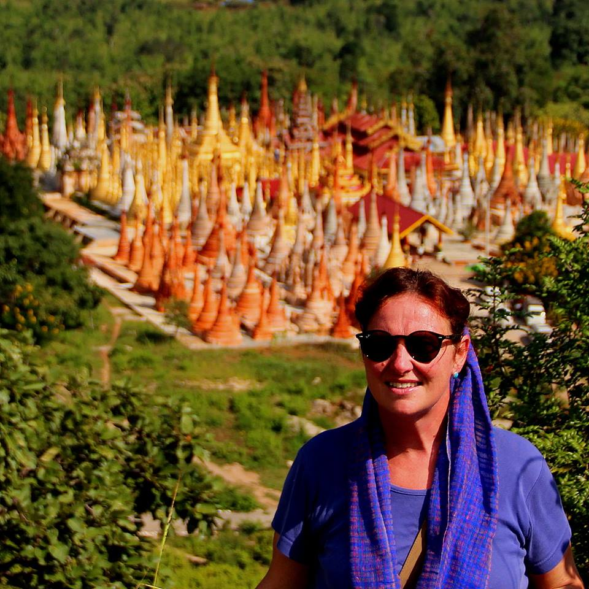
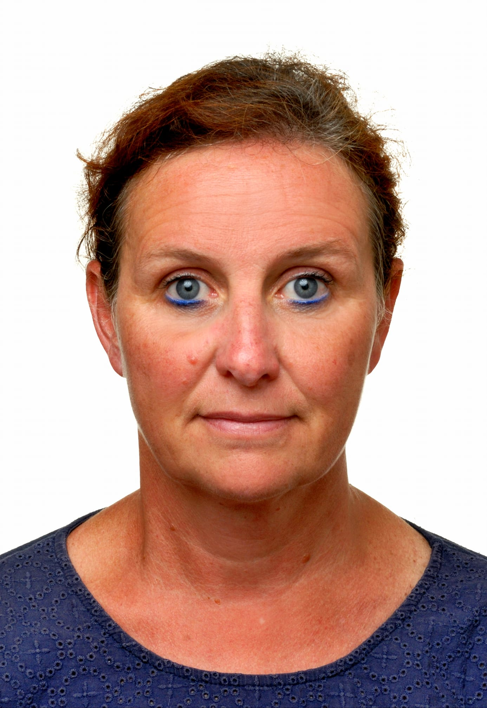
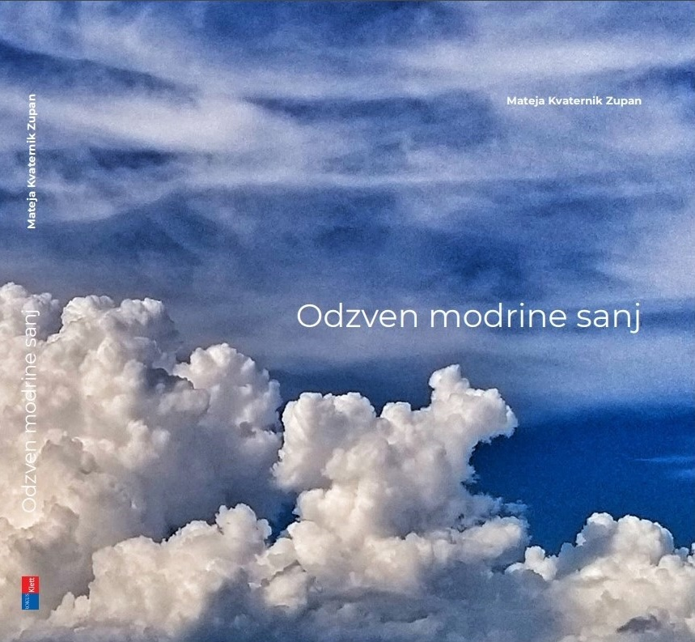
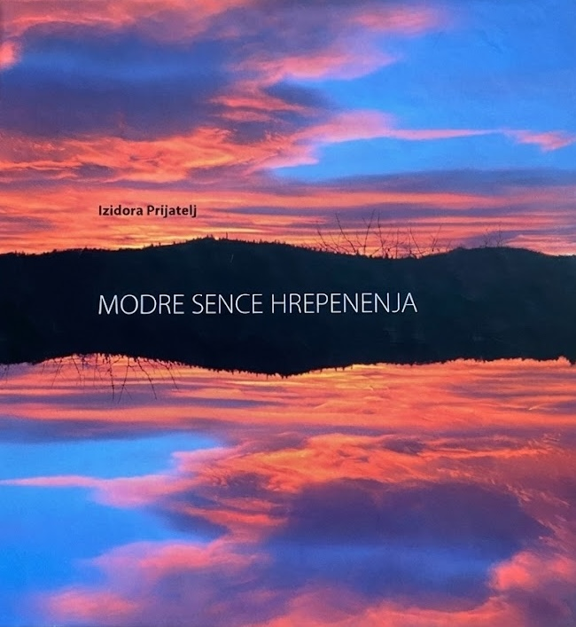

Architect | Photographer | Poet | Traveler

She was born in Ljubljana in 1965 into a family with three children. She spent her childhood in the Savsko naselje neighborhood in Ljubljana. After finishing the Vič High School, she enrolled at the Faculty of Architecture, where she graduated in 1991 with a thesis on the renovation of the old Kaštel and the revitalization of Grožnjan.
After completing her studies, she worked as an independent cultural worker in architecture. During these years, she collaborated with her father, France Kvaternik, on numerous architectural projects (Grahovo, Žužemberk, Liboje, ...) and cultural heritage renovations. She also engaged in the study and execution of stained glass windows (Razkrižje, Notranje Gorice).
Her career led her to the Ministry of the Environment and Spatial Planning, and later to the Government Office for Development and European Cohesion Policy. Since 2007, she has served at the Ministry of Culture as an Inspector – Senior Councillor for Cultural Heritage.

Faculty of Architecture, Ljubljana (1991)
Thesis: Renovation of the Old
Castle and Revitalization of Grožnjan.
Inspector – Senior Councillor
Ministry of Culture
Field: Preservation
of Cultural Heritage
Born: January 1, 1965, Ljubljana
Citizenship:
Slovenian
Passions: Photography, Poetry, Travel
She began writing poetry in her youth and developed a passion for photography during her travels. Her works combine her poetic voice with her authorized photographs.

Her second poetry collection, published under her own name. It includes revised poems from her first collection and new works from 2011-2020, accompanied by her photographs.

Her debut poetry collection, published under the pseudonym Izidora Prijatelj. A collection of poems equipped with her own photographs.
For inquiries about her work, publications, or cultural heritage, please contact:
Email: mkzupan@gmail.com
Location: Ljubljana, Slovenia